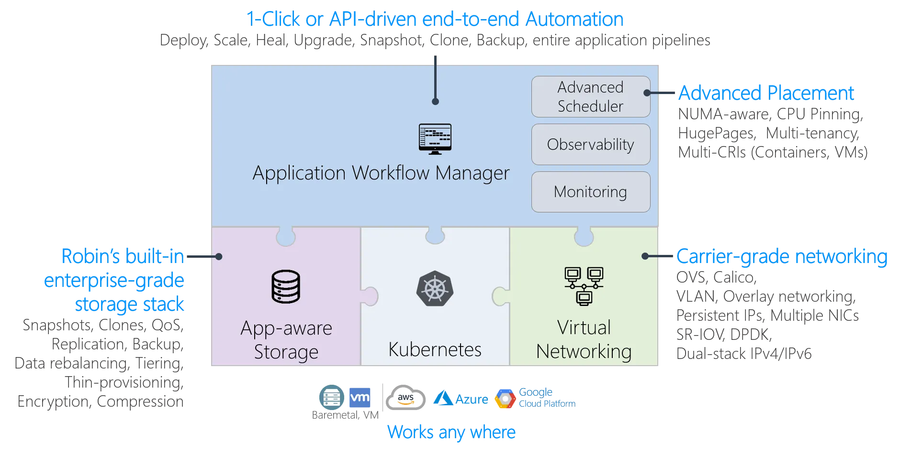

Kubernetes, the Robin way
By Prasun Sukai | Aug 29, 2023
What’s Robin?
The Robin Kubernetes Platform is a sophisticated extension of the widely adopted Kubernetes container orchestration system. It enhances Kubernetes’ capabilities by integrating advanced data management features and optimizing the deployment and management of complex containerized applications.
At its core, the Robin Kubernetes Platform focuses on simplifying and improving data-intensive application management within Kubernetes clusters. It addresses challenges related to data storage, application lifecycle management, and performance optimization.
Robin’s Key Features
In order to maximize results in using Kubernetes, Robin CNP (Cloud Native Platform) has combined application workflow automation, app-aware storage and virtual networking.
Application Workflow Automation
Robin’s application management layer provides one-click application provisioning and lifecycle management. It can increase productivity by operating through a 1-click application pipeline deployment to be as quick as minutes as opposed to weeks on end.
App-Aware Storage
One of the standout features of the Robin Kubernetes Platform is its innovative approach to application deployment and data management. It introduces the concept of “application-aware storage orchestration”.
With application-aware storage, storage and IO resources are managed at the application level. Robin provides enterprise-grade data protection leading to 50% or more storage savings.
Virtual Networking
Robin has flexible networking built on OVS and Calico which supports overlay networking. With Robin CNP, IP addresses can be preserved during application migrations and restarts.
Database Management
The Robin Kubernetes Platform also shines in its ability to simplify the complexity of managing databases and other stateful applications. It provides tools for automating database provisioning, scaling, and lifecycle management.
Great UI-Interface
Robin Cloud Native Platform offers a user-friendly interface for monitoring and managing applications and their associated data. This graphical dashboard provides insights into resource consumption, application health, and performance metrics.

Summary
In summary, the Robin Kubernetes Platform is a specialized extension of Kubernetes that focuses on enhancing the management of data-intensive applications. By offering features like application-aware storage orchestration and data protection, it provides organizations with the tools needed to efficiently deploy and manage complex containerized workloads.